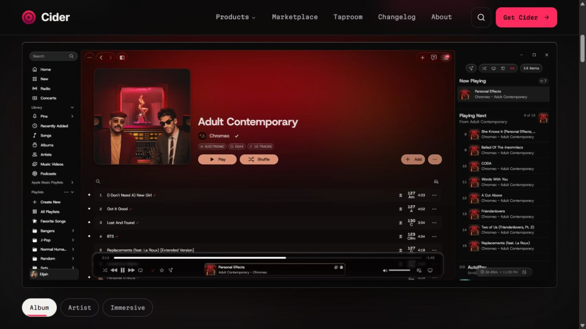
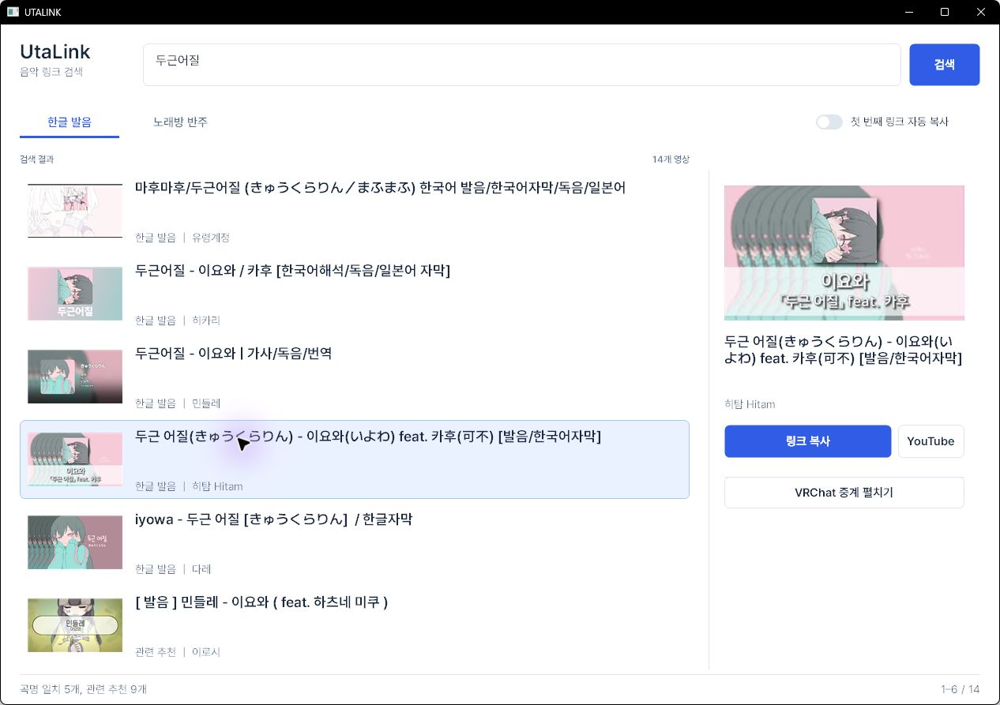

Cider의 Windows 화면

실제 이미지, 곡명, 아티스트를 붙여서 표시하고 선택한 콘텐츠의 동작을 한곳에 모으는 원칙을 참고했습니다. 원본
UtaLink Windows 구현

긴 한국어와 일본어 제목을 읽기 위해 목록 썸네일을 120px로 키우고 제목 두 줄을 확보했습니다. 복사는 파란색 주 동작이며 중계는 접어 둡니다. 음반 단위의 탐색 화면보다 영상 비교에 공간을 더 줬습니다.

실제 이미지, 곡명, 아티스트를 붙여서 표시하고 선택한 콘텐츠의 동작을 한곳에 모으는 원칙을 참고했습니다. 원본

긴 한국어와 일본어 제목을 읽기 위해 목록 썸네일을 120px로 키우고 제목 두 줄을 확보했습니다. 복사는 파란색 주 동작이며 중계는 접어 둡니다. 음반 단위의 탐색 화면보다 영상 비교에 공간을 더 줬습니다.
비교 후 수정: 장식용 레코드와 번호 제거, 어두운 선택 카드 제거, 복사와 열기 같은 줄 배치, 탭 강조색 통일, 실제 한일 글리프를 포함한 앱 전용 글꼴 내장. 최종 스크린샷은 앱 실행 상태를 캡처한 이미지입니다.